Motor Grader Lift Assembly
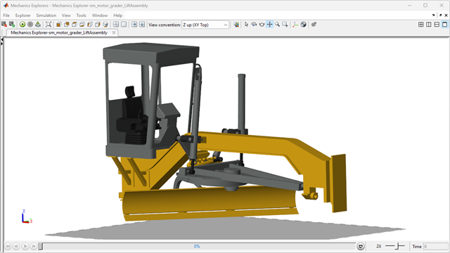
This example models the lift assembly of a motor grader. The actuation system can be driven using prescribed motion to determine the required actuator size. Ideal actuators can be used to begin the process of tuning controllers.
(return to Motor Grader Design with Simscape Overview)
Contents
Model
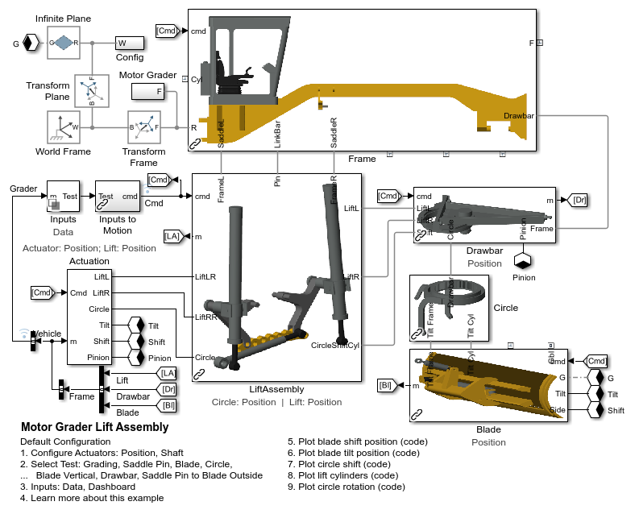Lift Assembly
The lift assembly subsystem contains the components necessary to position the rear of the drawbar. The independent lift cylinders set the height of two points on the rear of the drawbar.
The circle shift cylinder can move the drawbar according to the kinematics of the four bar linkage formed by these components:
- Frame
- Lift Cylinder Left
- Drawbar
- Lift Cylinder Right
The link bar is connected to the frame via a pin. When that pin is engaged, the four bar linkage formed by these four components is fixed in place.
- Frame
- Saddle Left
- Link Bar
- Saddle Right
The link bar can be repositioned so that the drawbar has access to a new motion envelope defined by the four bar linkage formed by the lift cylinders.
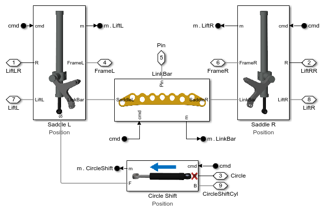Saddle Lift Cylinder Assembly
There are two lift cylinders and two saddle parts, one on each side of the drawbar. Together, they form a four bar linkage to position the drawbar. The opposite arms of the four bar linkage are the lift cylinders which can be indepdenently extended to raise, lower, or reorient the drawbar.
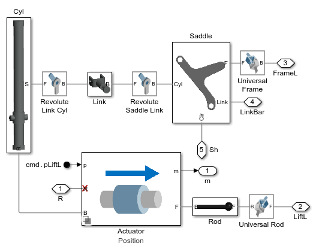Link Bar Model
The link bar is part of a four-bar linkage that is normally fixed in place. Its location defines the limits drawbar's motion envelope.
The link bar can be located in one of seven positions. The position of the link bar is set by the hole in which the saddle pin is engaged. The pin engagement with the target hole is modeled by setting the mode of one Bushing Joint to "Locked" (input signal = 1) while all others are set to "Normal" (input signal = 0). If the pin is being moved from one hole to another, all Bushing Joints will have their mode set to "Normal". MATLAB code is used to convert the number of the engaged hole to the mode settings for all Bushing Joints.
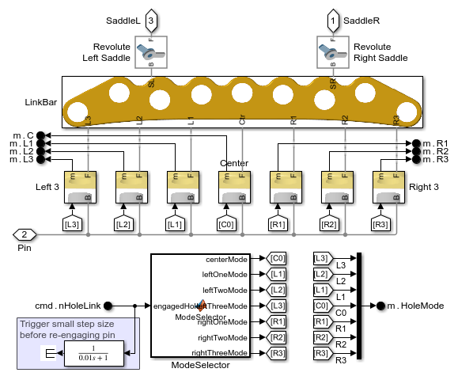Drawbar Model
The drawbar is suspended below the frame and is part of the mechanical assembly used to position the blade. Below the drawbar is a circle which a part that holds the bracket for the blade. The circle can be reoriented to position the blade at an angle suited to the current task.
A motor drives a pinion gear which rotates the circle. The motor can be driven using prescribed motion which enables the model to calculate how much torque is required to rotate the circle. It can also be actuated by a mechanical shaft which is connected to an actuator modeled in the actuation system.
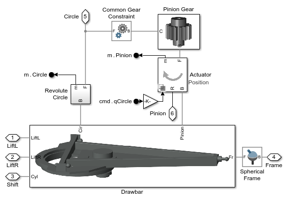Simulation Results: Saddle Pin Test
The plots below show the results from a test sequence where the saddle pin is moved from one hole to another. The sequence of steps is:
- Lower the blade to the ground.
- Put the lift cylinders in "float" - make them completely passive.
- Disengage the saddle pin from the link bar.
- Use the circle shift cylinder to align the target hole of the link bar with the saddle pin.
- Engage the saddle pin with the target link bar hole.
In the results below, the lift cylinders stop following the commanded position once they are put into float mode. As the circle shift cylinder is extended, one lift cylinder contracts while the other extends. This alters the four-bar linkage that can position the drawbar so that the blade can move within a new motion envelope.
Position Actuation
In the first set of plots, prescribed motion is used for all actuation systems except for the lift cylinders which must be passive for a portion of the test. The required force to reach these positions is calculated by the simulation.
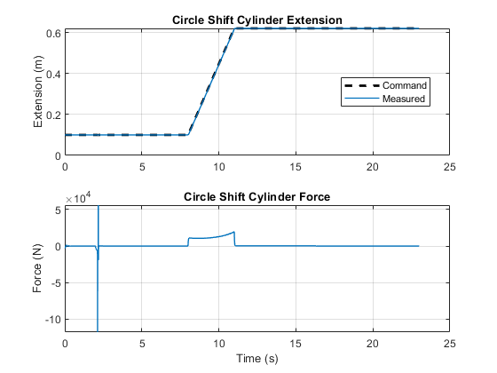 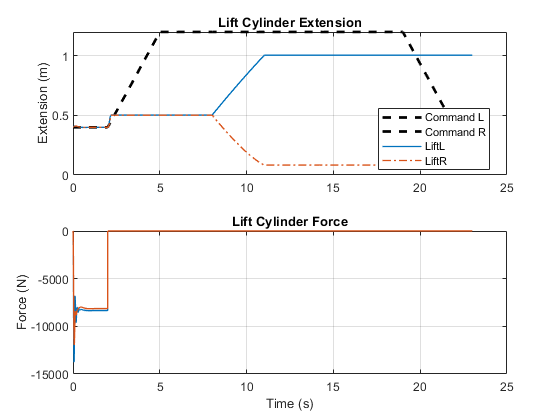Shaft Actuation
The same test is run again, this time applying force and torque at the actuators. This closed-loop actuation with abstract actuators enables us to start the process of tuning the controllers and identifying requirements for bandwidth and sensor accuracy.
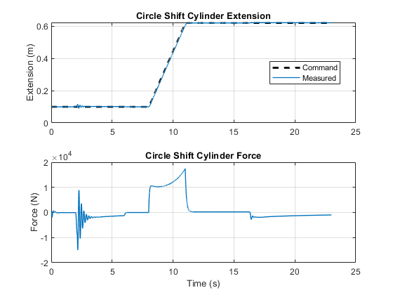 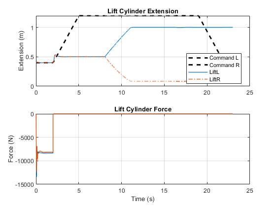Simulation Results: Blade Vertical
The plots below show the results of a test where the saddle pin is engaged in the far right hole. This permits the drawbar to be extended far to the left side of the grader and for the blade to be oriented at a large angle with respect to the ground.
Position Actuation
In the first set of plots, prescribed motion is used for all actuation systems. The required force to reach these positions is calculated by the simulation.
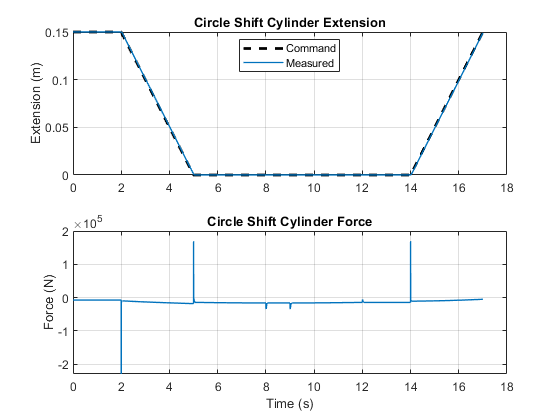 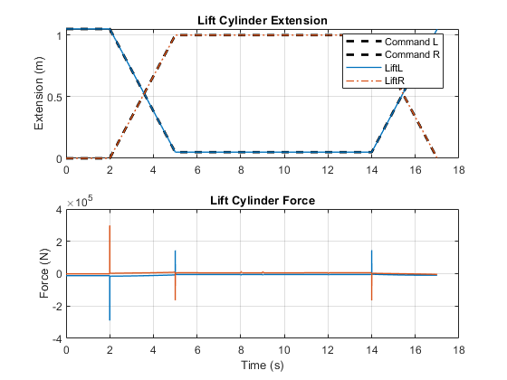 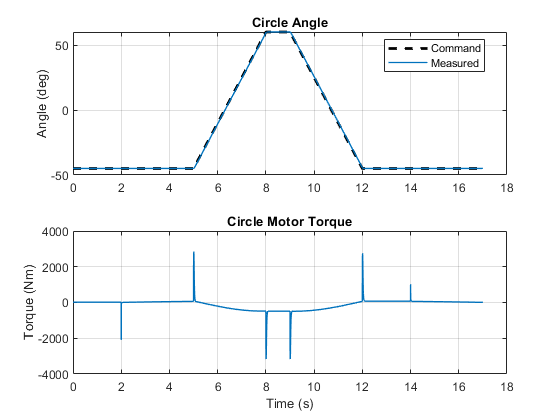Shaft Actuation
The same test is run again, this time applying force and torque at the actuators. This closed-loop actuation with abstract actuators enables us to start the process of tuning the controllers and identifying requirements for bandwidth and sensor accuracy.
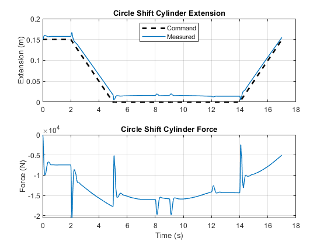 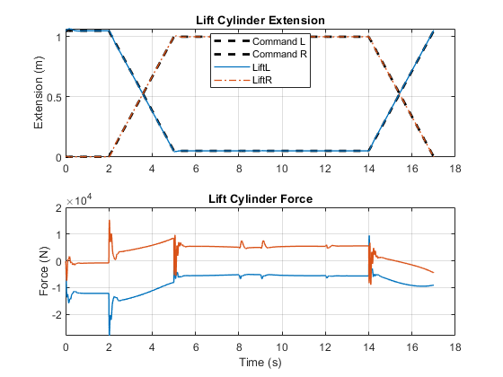 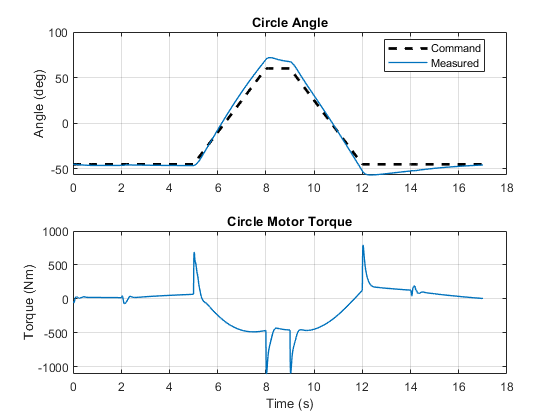Simulation Results: Saddle Pin to Blade Vertical
In this test, the saddle pin is shifted to a new position and the blade is then moved to a vertical position. This highlights the ability of Simscape Multibody to redefine the kinematic structure of a model during simulation. This is much more efficient than relying on a stiff spring-damper to define nearly rigid connections between parts.
Position Actuation
Prescribed motion is used for all actuation systems. The required force to reach these positions is calculated by the simulation.
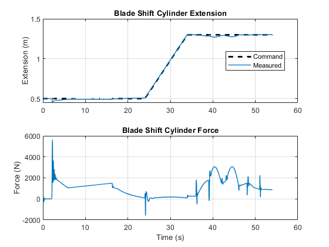 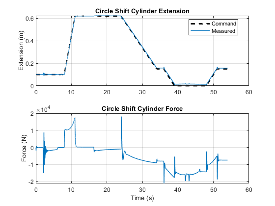 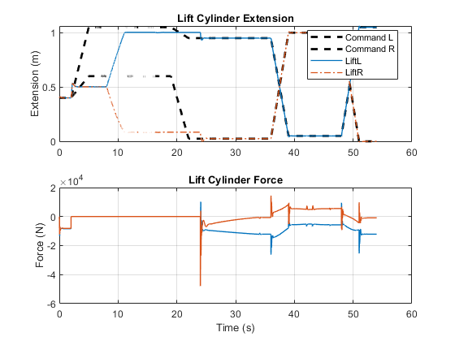